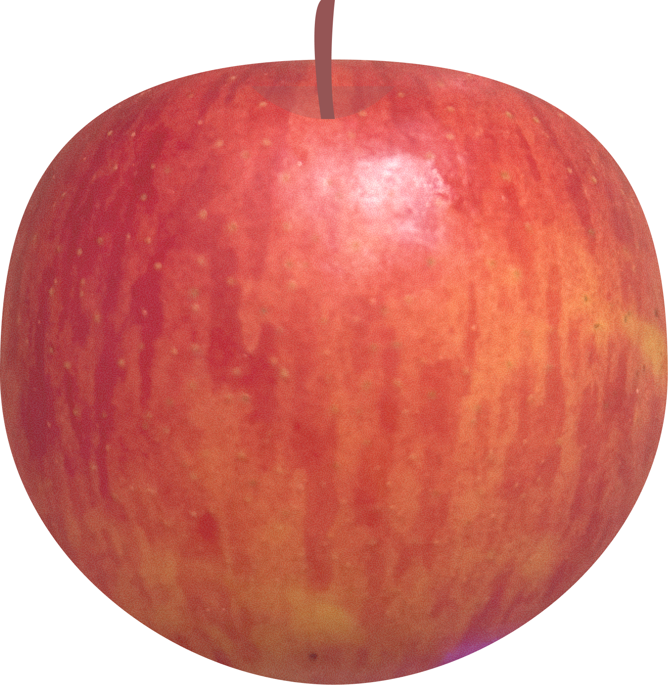

tap to taste ↑
Washington State, USA
Discovered as a chance seedling in 1979 at an orchard near Gleed, Washington. Named after Alice Zirkle, co-founder of Rainier Fruit Company. Its flavor deepens after months in storage — what you taste in stores is the best version of it.
Not a flashy apple. It was sitting next to some louder varieties and I almost skipped it. The flesh is firm — almost too firm — but there's something layered in the flavor that most of the sweeter ones don't have.
Sweet-leaning and a little dry, but there's a quiet complexity in there if you pay attention.